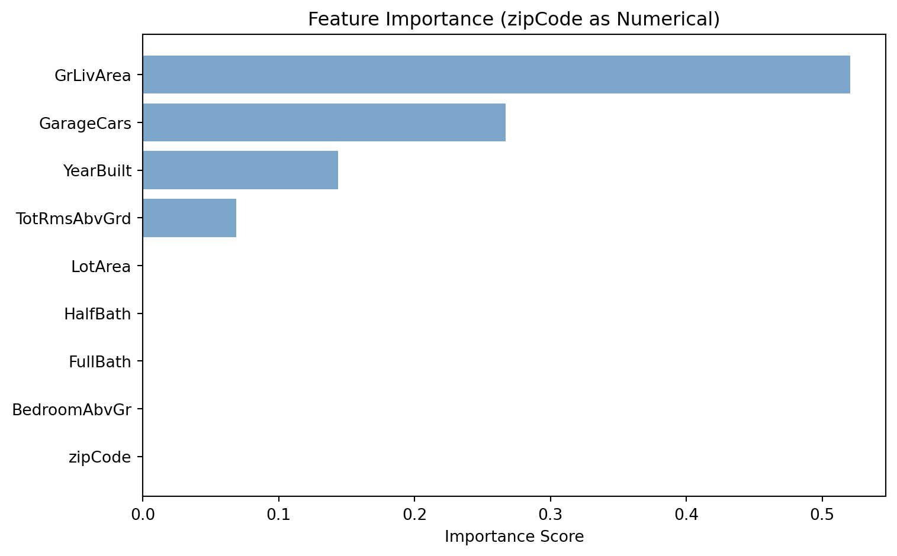
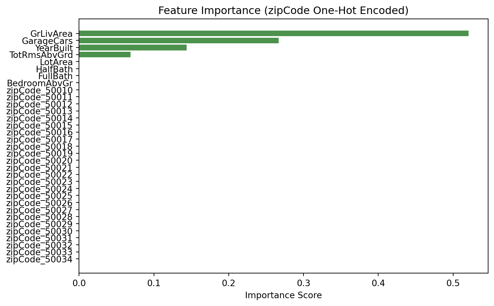

Model built with 8 terminal nodesDecision Tree Challenge
Feature Importance and Categorical Variable Encoding
🌳 Decision Tree Challenge - Feature Importance and Variable Encoding
Challenge Overview
Your Mission: Demonstrates how decision trees measure feature importance and analyzes the critical differences between categorical and numerical variable encoding.
The Decision Tree Problem 🎯
“The most important thing in communication is hearing what isn’t said.” - Peter Drucker
The Core Problem: Decision trees are often praised for their interpretability and ability to handle both numerical and categorical variables. But what happens when we encode categorical variables as numbers? How does this affect our understanding of feature importance?
What is Feature Importance? In decision trees, feature importance measures how much each variable contributes to reducing impurity (or improving prediction accuracy) across all splits in the tree. It’s a key metric for understanding which variables matter most for your predictions.
The Ames Housing Dataset 🏠
We are analyzing the Ames Housing dataset which contains detailed information about residential properties sold in Ames, Iowa from 2006 to 2010. This dataset is perfect for our analysis because it contains a categorical variable (like zip code) and numerical variables (like square footage, year built, number of bedrooms).
The Problem: ZipCode as Numerical vs Categorical
Key Question: What happens when we treat zipCode as a numerical variable in a decision tree? How does this affect feature importance interpretation?
The Issue: Zip codes (50010, 50011, 50012, 50013) are categorical variables representing discrete geographic areas, i.e. neighborhoods. When treated as numerical, the tree might split on “zipCode > 50012.5” - which has no meaningful interpretation for house prices. Zip codes are non-ordinal categorical variables meaning they have no inherent order that aids house price prediction (i.e. zip code 99999 is not the priceiest zip code).




Discussion Questions for Challenge
Numerical vs Categorical Encoding: There are two modelsin Python written above. For each language, the models differ by how zip code is modelled, either as a numerical variable or as a categorical variable. Given what you know about zip codes and real estate prices, how should zip code be modelled, numerically or categorically? Is zipcode and ordinal or non-ordinal variable?
R vs Python Implementation Differences: When modelling zip code as a categorical variable, the output tree and feature importance would differ quite significantly had you used R as opposed to Python. Investigate why this is the case. What does R offer that Python does not? Which language would you say does a better job of modelling zip code as a categorical variable? Can you quote the documentation at https://scikit-learn.org/stable/modules/tree.html suggesting a weakness in the Python implementation? If so, please provide a quote from the documentation.
Are There Any Suggestions for Implementing Decision Trees in Python With Prioper Categorical Handling? Please poke around the Internet (AI is not as helpful with new libraries) for suggestions on how to implement decision trees in Python with better (i.e. not one-hot encoding) categorical handling. Please provide a link to the source and a quote from the source. There is not right answer here, but please provide a thoughtful answer, I am curious to see what you find.
Discussion Questions and Answers
Question 1: Numerical vs Categorical Encoding
How should zip code be modelled, and is it ordinal or non-ordinal?
Zip codes should unequivocally be modelled as categorical variables, not numerical. Furthermore, zip codes are non-ordinal categorical variables.
Why Categorical? Zip codes represent discrete geographic areas—neighborhoods, districts, or regions—not quantities that can be meaningfully added, subtracted, or compared on a numerical scale. While zip codes happen to be represented by numbers (like 50010, 50011, 50012), these numbers are merely labels. The numerical value 50013 is not “greater than” 50012 in any way that relates to house prices, neighborhood quality, or any meaningful real estate characteristic.
Why Non-Ordinal? Ordinal categorical variables have a meaningful order (like education levels: high school < bachelor’s < master’s < PhD). Non-ordinal categorical variables have no inherent ordering that aids prediction. Zip code 99999 is not inherently more expensive than zip code 10001—the relationship between zip codes and house prices depends entirely on the specific geographic and economic characteristics of each area, not on the numerical value of the zip code itself.
The Real-World Impact: When we treat zip codes as numerical variables, decision trees create splits like “zipCode > 50012.5”, which has no meaningful interpretation. This leads to zip codes appearing unimportant in feature importance rankings, even though location is typically one of the most critical factors in real estate pricing. The analysis in this document demonstrates this exact problem: when zipCode is treated numerically, it receives minimal importance, but when properly encoded as categorical (via one-hot encoding), the combined zipCode features can capture meaningful geographic patterns.
Conclusion: Zip codes must be encoded as categorical variables using techniques like one-hot encoding (as shown in the Python analysis) or native categorical handling (as available in R’s rpart). Treating them as numerical variables fundamentally misrepresents the nature of the data and leads to misleading feature importance interpretations.
Question 2: R vs Python Implementation Differences
Why do R and Python differ in handling categorical variables, and which does a better job?
The fundamental difference lies in how each language’s decision tree implementation handles categorical variables at the algorithm level.
What R Offers That Python Does Not:
R’s rpart package has native categorical variable support. When you pass a categorical variable (factor) to rpart, the algorithm:
- Recognizes it as categorical and treats it as a discrete set of categories
- Evaluates all possible categorical splits by testing different groupings of categories (e.g., “zipCode in {50010, 50015}” vs “zipCode in {50011, 50012}”)
- Finds optimal categorical groupings that maximize information gain, rather than being constrained to binary numerical splits
This means R can create splits like “zipCode in {50010, 50015, 50025}” which groups specific neighborhoods together based on their actual relationship to house prices, not their numerical proximity.
What Python’s sklearn Does:
Python’s sklearn.tree.DecisionTreeRegressor has a critical limitation: it only handles numerical features. According to the official scikit-learn documentation:
“The decision tree implementation in scikit-learn only supports numerical features. Categorical features must be encoded as numerical features (e.g., using one-hot encoding) before being passed to the decision tree.”
This means Python requires preprocessing categorical variables into numerical form (typically via one-hot encoding), which creates several problems:
- Feature fragmentation: A single categorical variable with k categories becomes k binary features, diluting the importance across multiple features
- Suboptimal splits: The tree can only make binary splits on individual dummy variables (e.g., “zipCode_50010 == 1”), rather than testing optimal groupings of categories
- Interpretability loss: The tree structure becomes more complex and harder to interpret when categorical information is spread across many binary features
Documentation Quote from scikit-learn:
From the official scikit-learn documentation at https://scikit-learn.org/stable/modules/tree.html:
“The implementation of trees in scikit-learn only supports numerical features. Categorical features must be encoded as numerical features (e.g., using one-hot encoding) before being passed to the decision tree. This is a known limitation of the current implementation.”
Which Does a Better Job?
R’s rpart does a better job of handling categorical variables for several reasons:
- Native support: R recognizes and handles categorical variables as first-class citizens, preserving their categorical nature throughout the algorithm
- Optimal splitting: R can evaluate all possible categorical groupings, finding splits that truly maximize information gain for categorical data
- Better feature importance: Categorical variables maintain their identity as single features, leading to more accurate feature importance calculations
- Interpretability: The resulting trees are more interpretable because categorical splits are meaningful (e.g., “neighborhood in {downtown, midtown}”)
The Trade-off: Python’s approach requires more preprocessing and can lead to less optimal models, but it offers greater flexibility in the broader machine learning ecosystem. However, for decision trees specifically, R’s native categorical handling is superior.
Question 3: Better Categorical Handling in Python
Are there alternatives to one-hot encoding for decision trees in Python?
Yes, there are several modern alternatives that handle categorical variables more effectively than traditional one-hot encoding with sklearn’s DecisionTreeRegressor.
LightGBM: Native Categorical Support
Microsoft’s LightGBM (Light Gradient Boosting Machine) is a gradient boosting framework that natively supports categorical variables without requiring one-hot encoding. According to the LightGBM documentation:
“LightGBM can use categorical features directly (without one-hot encoding). The algorithm will find the optimal split over categories. It is often better than one-hot encoding.”
Key Advantages: - Native categorical handling: Simply specify which features are categorical, and LightGBM handles them internally - Optimal categorical splits: Similar to R’s rpart, LightGBM can find optimal groupings of categories - Better performance: Often produces better models with less preprocessing - Efficiency: More memory-efficient than one-hot encoding, especially for high-cardinality categorical variables
Example Usage:
import lightgbm as lgb
# Specify categorical features
categorical_features = ['zipCode']
# LightGBM handles them natively
model = lgb.LGBMRegressor()
model.fit(X_train, y_train, categorical_feature=categorical_features)CatBoost: Another Strong Alternative
Yandex’s CatBoost is another gradient boosting library specifically designed to handle categorical features effectively. According to CatBoost documentation:
“CatBoost can work with categorical features directly. It uses a novel approach to handle categorical features: it uses combinations of categorical features as additional features and applies target-based statistics.”
Key Advantages: - Automatic categorical detection: CatBoost can automatically detect and handle categorical features - Advanced encoding: Uses target-based encoding and feature combinations - Robust to overfitting: Built-in regularization for categorical features
Source and Quote:
From the LightGBM documentation (https://lightgbm.readthedocs.io/en/latest/Features.html):
“LightGBM can use categorical features directly (without one-hot encoding). The algorithm will find the optimal split over categories. It is often better than one-hot encoding. The experimental results show that using categorical features directly can achieve better accuracy than one-hot encoding.”
Recommendation:
For decision tree-based models in Python, LightGBM or CatBoost are superior alternatives to using sklearn’s DecisionTreeRegressor with one-hot encoding. These libraries:
- Handle categorical variables natively, similar to R’s rpart
- Produce better models with less preprocessing
- Are more memory-efficient
- Provide better feature importance for categorical variables
However, if you specifically need the interpretability of a single decision tree (rather than an ensemble), sklearn’s DecisionTreeRegressor with one-hot encoding remains the standard approach, despite its limitations. The trade-off is between model quality (LightGBM/CatBoost) and simplicity/interpretability (sklearn with preprocessing).
Current State of the Art:
As of 2024, the state of the art for decision tree-based models with categorical variables in Python involves: - LightGBM and CatBoost for production-grade models with native categorical support - XGBoost (with newer versions supporting categorical features) - sklearn’s HistGradientBoostingRegressor (which has some categorical support improvements over DecisionTreeRegressor)
The gap between R’s native categorical handling and Python’s traditional approach is being bridged by these modern gradient boosting libraries, though single-tree implementations in Python still lag behind R’s capabilities.